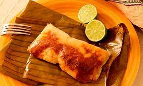
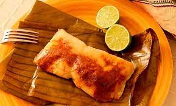
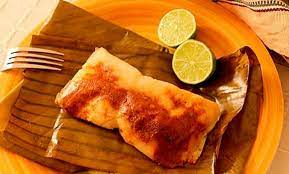

La gastronomía hondureña es muy variada, ya que contiene elementos indígenas pre-colombinos, españoles, criollos y, en alguna medida, africanos, como es típico en toda la costa atlántica centroamericana. La cocina tradicional hondureña está dominada fuertemente por los mariscos y por el maíz, que es un cultivo autóctono que forma parte de la base alimentaria de los pueblos prehispánicos de Mesoamérica que habitaron la región. La comida típica de Honduras está basada en carnes, aves, pescados, tortillas, frijol, arroz, productos lácteos como quesos y mantequillas de la zona, verduras o legumbres, y frutas. El café como bebida aromática no falta en todo el territorio nacional para acompañar el desayuno, la cena o cualquier hora del día.
La baleada es uno de los platos típicos más tradicionales y representativos de la gastronomía hondureña,12 originada en el norte de Honduras a mediados del siglo XX. Se desconoce el origen demográfico exacto y de su nombre.
Consiste en una tortilla de harina de trigo de aproximadamente una mano de diámetro, doblada a la mitad y rellena de frijoles fritos y demás acompañantes. La receta básica lleva comúnmente frijoles rojos —preferidos en Honduras— con mantequilla y/o queso rayado, la cual es llamada "baleada sencilla". También se prepara con complementos como huevo frito, algún tipo de carne en trozos, aguacate, o rodajas de plátano maduro frito; conocida en los puesto de venta como "baleada especial" o "mixta". Normalmente se come en el desayuno o la cena
________________Carne Asada___________________Chanfaina o Candinga_______________Chorizo en Barbacoa____________
______________Chuleta frita_________________________Elotes Cocidos___________________Nacatamales_______________
______________Pollo Chuco_______________________Tamales de Frijol___________________Yuca con Chicharron___________

______________Pinol________________________________Horchata_________________________Jugo de Caña___________
______________Guifiti________________________________Chicha de Piña_________________________Rompopo___________